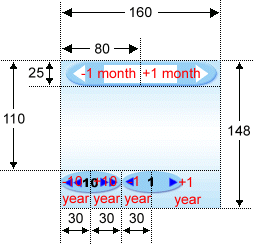

|
jLIVE Builder™ 對於圖片檔 (image file) 的使用分為應用程式的一、資料圖片檔 (image data files) 及二、使用者介面圖片檔 (GUI image files)。資料圖片檔是應用程式的圖片檔資料，通常存放於檔案伺服器 (file server)，而另以路徑型式存放於相關檔案資料記錄的資料庫中，例如：產品的型錄圖片檔或公司員工照片。使用者介面圖片檔則是程式圖形介面 (GUI) 所使用的圖片檔，例如：按鈕的圖示 (icon) 、圖片啟動元件 (image invoker) 的背景圖片或常出現在程式中的公司 LOGO 圖片檔。 資料圖片檔 (image data files) 的使用可以參閱 圖片元件 (Image component) 的使用方式及上下載檔案 (file down and upload)的相關說明。 使用者介面圖片檔 (GUI image files) ，在應用程式中，設計師可依使用的頻繁度，分別將其置放於應用程式 class\images 及class\preloadimage 目錄下，其中置放於class\preloadimage 目錄下的圖片檔，稱之為預載圖片檔 (pre-load image file)：
所以使用頻繁的圖片檔，可將其置放於 class\preloadimage ，不經常使用的圖片檔則置放於 class\images，設計師可按需求自行配置。 在 jLIVE Builder™ 設計環境中，如果有新增或修改 class\preloadimage 或 class\images 目錄下的圖片檔，設計師須按選功能選單中的【重讀圖片檔】，更新目前系統所使用的圖檔。 jLIVE Builder™ 系統預設的預載圖片檔 (pre-load image file)，存放於 jLIVE\preloadimage\ 目錄下，每當設計師新增一個應用程式時，jLIVE Builder™ 會將 jLIVE\preloadimage\ 目錄下所有的圖片檔，複製到該應用程式路徑 class\preloadimage 目錄下，所以 jLIVE Builder™ 的每一個應用程式皆有獨立的預載圖片檔。設計師亦可將新增或修改的圖片檔存到jLIVE\preloadimage\ 目錄下，系統在下一次新增應用程式時，即以其為預設的預載圖片檔。
多人協同開發應用程式時，系統規劃師可以先行選定預載圖片檔 (pre-load image file)，並將其分發至工作群組的各個設計師，應用系統開發時，每一位設計師的視窗模組即能有一致的圖示介面。
預設的系統預載圖片檔，設計師可以更改圖示，但不可更改檔名且須以英文小寫命名 (case sensitive)，除了使用於萬年月曆輸入面盤的_cal.gif (160X148) 外，其他圖片尺寸可以按需求更改大小。 使用於瀏覽器元件 (Navigator component)：
使用於資料表元件 (Grid component) ：
使用於預設查詢介面 (default query panel) ：
使用於預覽報表視窗 (report preview window) ：
使用於運算式 ProgressShow () (formula ProgressShow()) ：
使用於萬年月曆輸入面盤 (calendar panel) ：
置換月曆背景圖片，其功能點擊區域 (hit area) 如下： 
Copyright © 2001~ 2004 Probe Technology . All Rights Reserved. Questions, comments, and suggestions to Service@probe.com.tw |